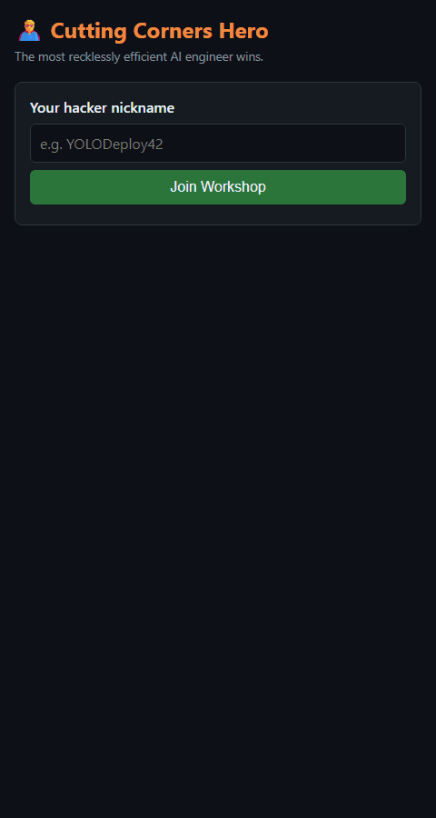

Julia Meshcheryakova
I build hands-on things around AI: security training games, agents, and small apps that make learning less boring.
I'm an ML engineer with an activist mindset: I like projects that improve lives by means of technology. 14+ years in IT, the last seven in machine learning, now at Microsoft. I'm good at converting real-world problems to technical level and delivering solutions, from 3D segmentation of teeth that was supposed to be an ML task and turned out to be pure algebra and geometry, to agents and GraphRAG for pharma research. Next I want to go deeper: closer to research and to the models themselves.
Outside work I run (my first marathon is for the MS Society), play intellectual games, and turn both into projects. My guilty pleasure is wordplay naming and logos.
Featured

🦸 Cutting Corners Hero
Inverted AI security training. Instead of being told what not to do, participants compete to pitch the most believably reckless shortcut for a realistic AI-agent scenario, predict how it backfires, and then see what actually blows up.
An LLM judge scores realism, danger, creativity and how well you predicted the fallout. Every scenario is grounded in a published taxonomy of attacks on AI agents and mapped to the OWASP Top 10 for LLM Applications (2026) and the OWASP Top 10 for Agentic Applications.
Rounds are played live with a facilitator, so there's no public self-serve version.
More projects
🧩 Quizrun
A running event with lateral-thinking puzzles: logic riddles you solve mostly by reasoning. You run or walk a course of about 5 km and solve puzzles at checkpoints along the way. Correct answers cut your finish time, so a sharp thinker can beat a faster runner.
Community events in 50+ cities across 10+ countries, 400+ participants to date. My passion project: I founded it and build the app.
🥗 Food Enough WIP
Scan any menu, see what you can eat. A solution growing from my own pain as a picky eater suffering from choice paralysis. Looking to ship it soon ;)
🏃 CogniRun
Developed during a hackathon. Run 3 km. After every kilometre the app asks a question (trivia, then logic, then maths), and faster answers score more. You finish with a score breakdown, percentiles, your GPS route and pace profile.
Next: growing it into a production-grade engine for healthy habits, gamifying running and memorisation.
🚢 Battleship: New Wave
A browser take on the classic game, from my pet-project zoo.
Volunteering
🏅 London Marathon 2027 for the MS Society
I only started running in 2024, and this is my second attempt to make my first marathon meaningful. For me the MS Society is not a random organisation that provides a spot for an event many runners dream of: I want to contribute to MS research both financially and through my skills.
♻️ Eco-activism
- eco-dvor & eco-taxi, Voronezh: automated route planning for coordinators (30% faster runs); the project grew from 15 to 50 mobile collection points and a 5k community.
- etonemusor.ru: crowdsourced waste-sorting map; integrated data from 5+ eco-projects, adding 100+ points.
- Green Green, Yerevan: organised 5 clean-ups.
🤝 Community
- Mentored in ML for TechLeaders; the programme became DataArt's ML internship.
- Organised IT-Cup, an intellectual games tournament for the IT industry, 7 times (and won it in 2013).
- StackOverflow: 3200+ reputation, ~180k people reached.